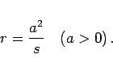
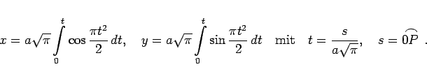
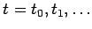
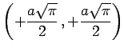
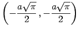

Klothoide (auch CORNUsche Spirale) heißt eine Kurve, die sich aus der umgekehrten Proportionalität ihres Krümmungsradius zur Länge des Bogens ergibt:
|  | (2.240a) |
Die Gleichung der Klothoide lautet in Parameterform
|  | (2.240b) |
Die Integrale können nicht durch elementare Funktionen ausgedrückt werden; sie lassen sich aber für jeden Parameter  durch numerische Integration berechnen, so daß die Klothoide punktweise gezeichnet werden kann. Wegen der Berechnung am Computer s. Lit. 3.12.
Die Kurve ist zentralsymmetrisch zum Koordinatenursprung, der gleichzeitig Wendepunkt ist. Im Wendepunkt ist die x-Achse Tangente. Bei A und B hat die Kurve je einen asymptotischen Punkt mit den Koordinaten  bzw. .
Die Klothoide findet z.B. beim Straßenbau Anwendung, wo der Übergang von einer Geraden in eine Kreiskurve durch einen Klothoidenabschnitt vermittelt wird (s. Lit. 3.12).